This is my account of my trip to Iceland in September, 2017. I had talked about going for several years, but I finally decided to pull the trigger and go, and I am so glad I did. I am going to try to be a bit more descriptive of this adventure than I was of the Alaska trip.
I flew overnight from Pittsburgh into Keflavík International Airport, just outside of Reykjavík, Iceland at 5:30 AM. Upon landing, I made the mistake of leaving the airport without getting anything to eat. I soon learned that Iceland is not like the U.S, in that most things are not open 24 hrs/day or on weekends. I took a bus to the rental car agency and picked up the Jeep Wrangler with a manual transmission (only certain rental companies will allow their cars on Iceland's F roads), and headed into Reykjavik to find breakfast. I stopped at the geothermal beach on the way but it wasn’t open, and I was tired and hungry. In Reykjavik I found a small cafe that opened at 7 for a quick breakfast (this was my first exposure to food prices in Iceland). After breakfast I took a scenic route through downtown and headed to the hotel for that night. After settling into the hotel, I went for a little drive to begin exploring for a few hours (and maybe a nap). That afternoon I had scheduled a snorkeling tour in the Silfra fissure between the North American and European tectonic plates. The water was 30 degrees, and was fed from glacier melt. The water melted off the glacier and then flowed through volcanic rock into the fissure, meaning the water was very cold but also extremely clear, with visibility over 100 meters. Due to the constant melt, there is a slow current that gently pushed you through the fissure. The site is also where the Althing occured, which is the oldest parliament in the world (founded 930 AD). The picture at the bottom of the main page is me in front of the Öxarárfoss waterfall in this area, the path to the waterfall is where "The Bloody Gate" from Game of Thrones was filmed. It was then time to head back to the hotel for dinner and bed.
I woke up and headed to breakfast, and enjoyed chatting with a family from the UK. I then headed North to the Glymur Waterfall, which is quite a hike, but is the second highest waterfall in Iceland at 198m tall. Along the way I made some friends from the midwestern US (more about them later). The hike starts close to sea level and you climb up one side, and wade across the river above the falls to descend the other side. The hike took most of the day and it was late by the time I arrived in Ólafsvík to that night’s hotel.
I awoke and set off into Snæfellsjökull National Park, which was a beautiful volcanic landscape to find some F roads to try out. I ended up driving the Wrangler up the face of a mountain and to the face of a glacier. The glacier was making its own weather, creating gale force winds coming off the mountain, driving rain and sleet to where I could barely stand up. It was a very cool experience. After descending from the mountain, I had a long drive to the next overnight spot, but took time to stop at "The mountain that looks like an arrowhead" (another Game of Thrones location). I did have to skip the Western Fjordlands, which I do hope to someday go back and visit. The overnight location that night was one of my favorites of the trip. I was in Akureyri, and met the hotel owners grandson Guddi, and 2 men from Estonia (who spoke no English or Icelandic). We stayed up until the early morning conversing by a combination of pictionary, sign language and Google translate. It was a lot of fun.
I woke up and had a late breakfast, before heading out. I had decided to head north on one of the small F roads to the Northern Coast to put my feet in the Arctic Ocean. It was another beautiful drive, and after getting my feet wet, I headed to Lake Myvatn via Goðafoss Waterfall (which doesn’t quite live up to the name when compared to others). I stopped at the hotel and then headed to Grjótagjá Cave followed by Hverfjall, an extinct volcano you can hike up and around the Caldera. Here I again ran into my friends from the midwestern US. I had a delicious dinner in a barn (the cows were being milked in the next room, I opted for the Lamb). After dinner I went to the Mývatn Nature Baths, to soak in the hot springs.
This was a long day that covered some of the toughest roads I have ever encountered. I headed South into Vatnajökull National Park with the intent of reaching Lake Viti in the Askja Crater. This is a geothermically heated lake, in the crater of a dormant volcano. However before I left, I stopped at a information station, there I found out that because of an earthquake/mudslide/tsunami combination the water had chilled. I was informed of a recent lava flow that was very cool in the same area, so I decided to see that instead. The road was incredibly rough, and the terrain was otherworldly. I felt like I was driving on the moon. Everything was grey, but after several hours and a few river crossings, the ground turned to a soft yellow sand. As I entered the park I came across a small hut and a girl approached from the side of the road, she was welcoming me to the park and asked where I was from. "Pittsburgh" received a quizzical response, as did "Pennsylvania." when I finally said the United States, she proclaimed that "We don’t get many Americans here." She walked a few steps away and came back with a few large pieces of the yellow sand I had been driving through, and revealed that it was in fact pumice, the rock that floats. She gave me a few pieces and told me to stay on the roads (Iceland is very relaxed about many things, driving off roads is not one of them) and to enjoy the park. I continued along to the ranger station, and stopped there to talk to the rangers, who gave my directions to the lava flow, and told me a little more about it. They said the volcano under the glacier had erupted and that lava had flowed under the glacier and had diverted a river. They drive down was unique, the road quickly turned to 2 tracks through deep volcanic sand, essentially rendering the steering wheel useless. The terminal face of the lava flow was impressive, the lava wasn’t just on top of the ground, but you could see where it had pushed the ground down several feet, and had moved some of the bedrock. I could also see the shape of the lava, it was sharp and covered in hardened splatters and air pockets. It was then time to head back to the next overnight spot, I had booked a different hotel in the same area. On the way back I stopped at the ranger station again. The information station I had stopped at before heading down had advised me to take a longer route to avoid a deep water crossing, but the rangers said I should be fine in vehicle I had. They were ultimately correct, but the water was quite a bit deeper than I had thought. The water ended up being about 6 inches above the bottom of the door. That night when I reached the hotel, I finally asked the receptionist where all the workers lived, there were too many hotels and not enough houses to explain it. She told me that most of the staff lived in the hotels, and that it was a lot of seasonal work.
The following day I woke up and began a long day of driving. In hindsight, I would skip the eastern coast if I visited again. It was still beautiful, but not to the level of the rest of the country. The one highlight was Dettifoss, the most powerful waterfall in Europe. If I were to visit again, I would have spent more time in the highlands and gone straight down from Lake Myvatn towards Hof, through the park.
I woke up and headed to the ice lagoon and ice beach and the black sands beach. After spending some time there I continued along the Southern coast past Eyjafjallajökull (the volcano that caused havoc for air traffic in europe in 2010). I ended the day at Geysir, the geyser that all others are named for.
I woke up and began to travel back to the airport, thus ending this great adventure.

 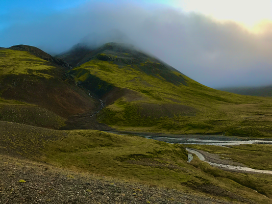
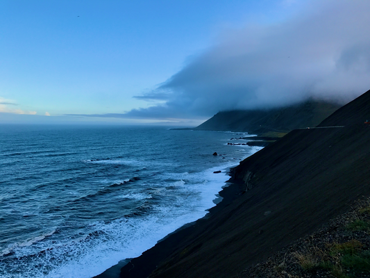
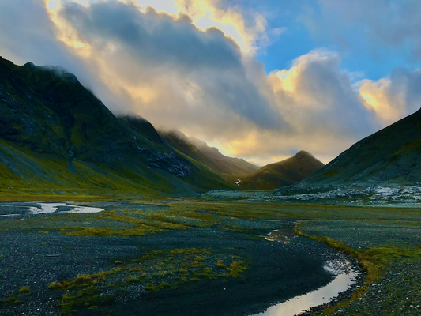
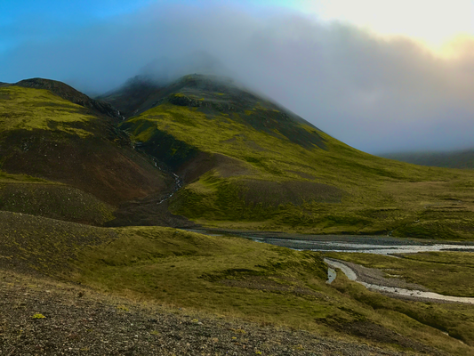
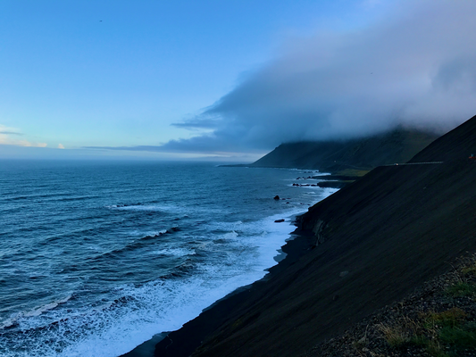
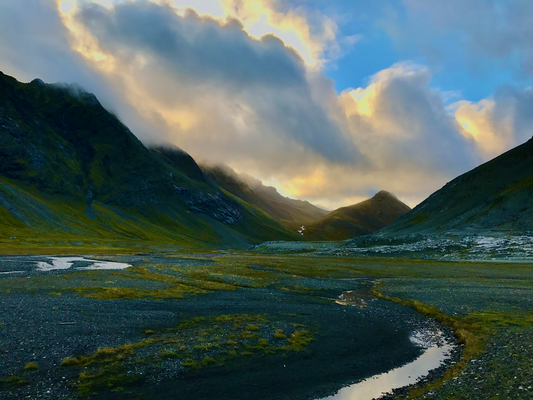


 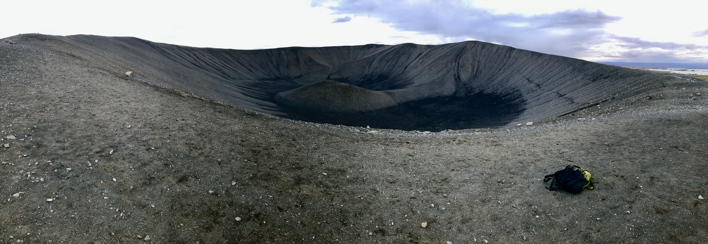
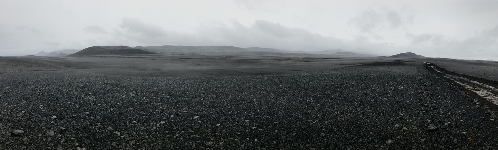
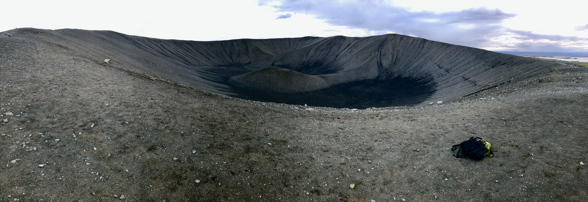
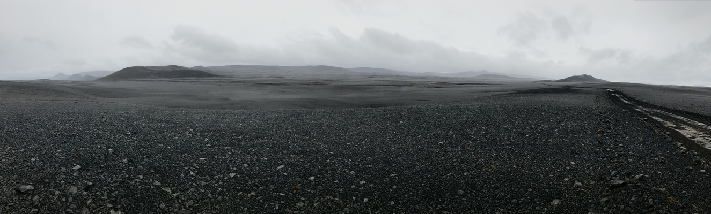

 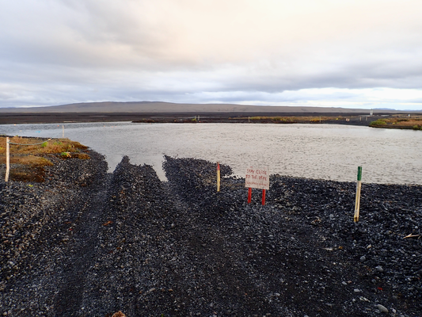
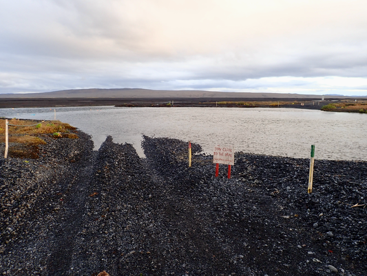
 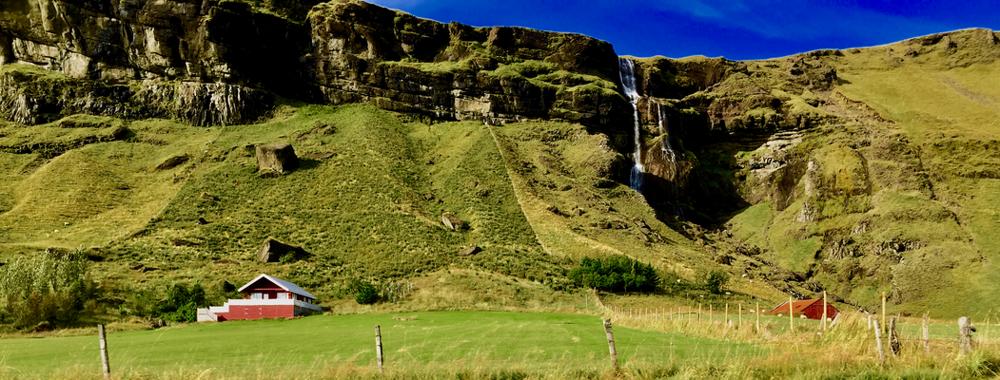
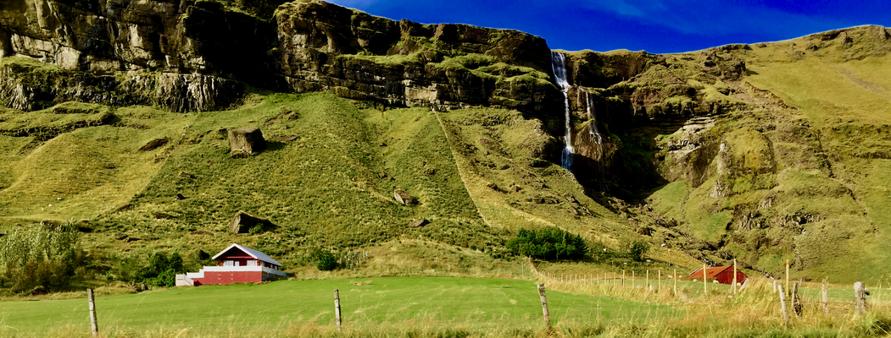


 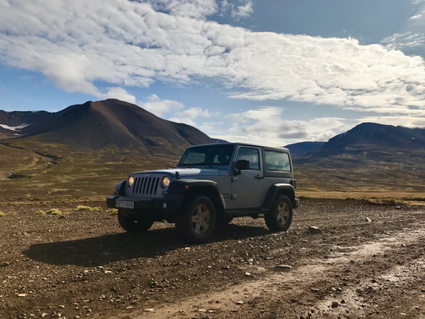
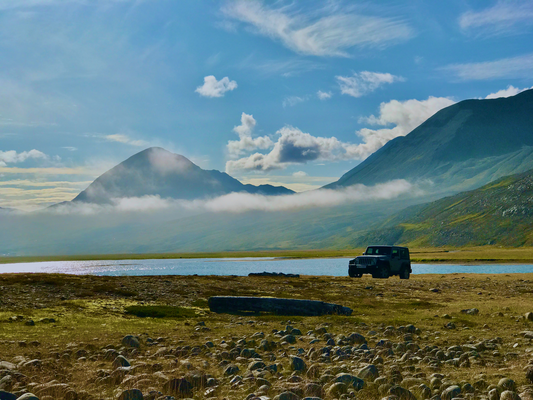
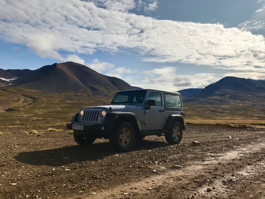
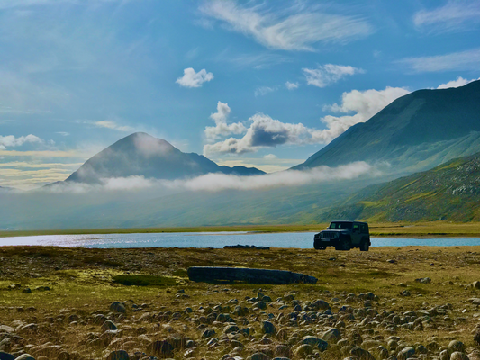


 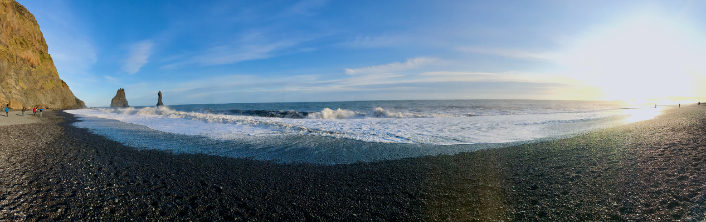
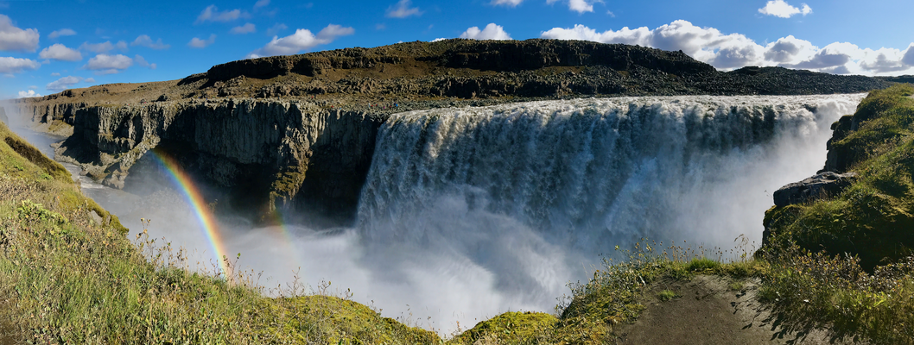
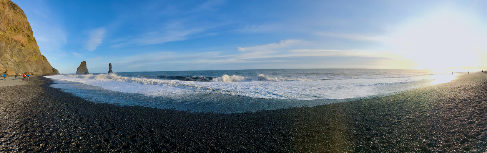
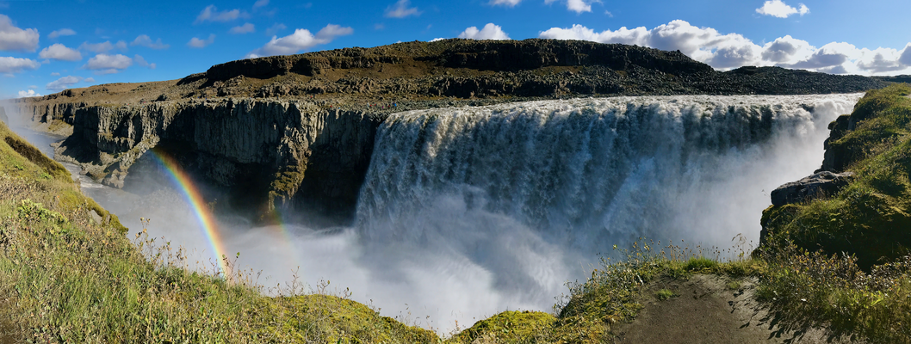


 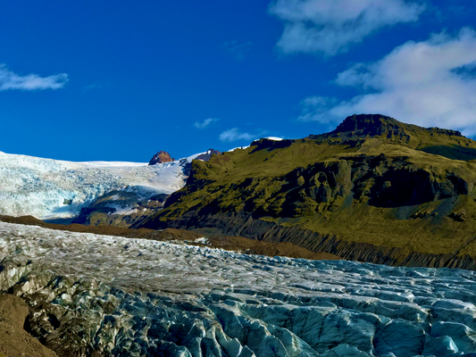
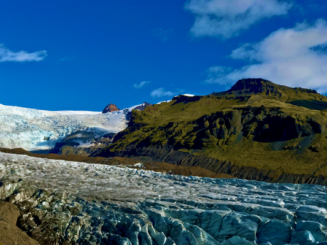


 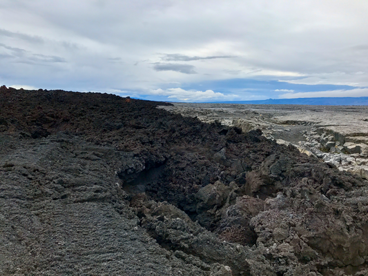
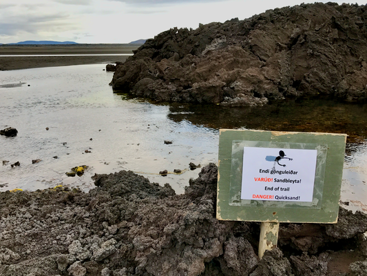
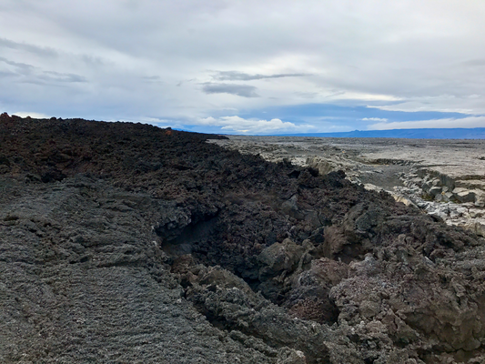
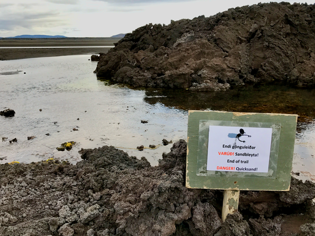